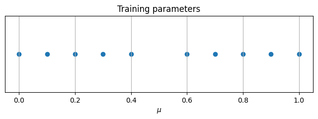
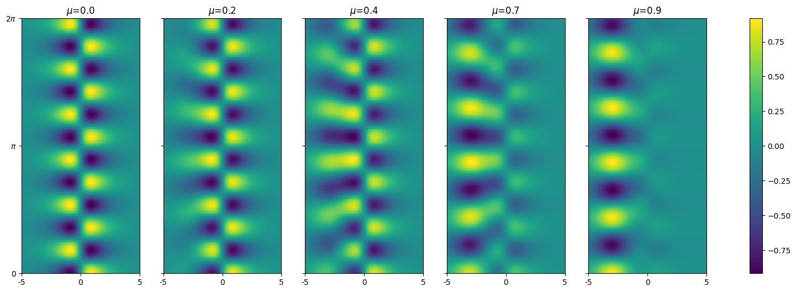
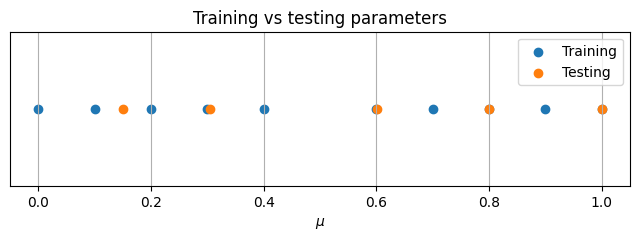
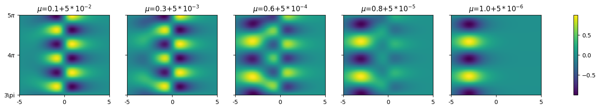
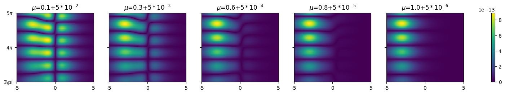
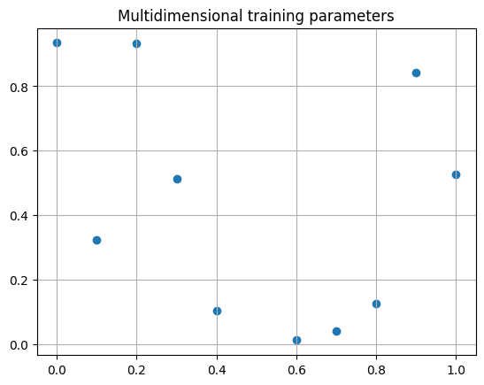

Parametric Dynamic Mode Decomposition#
In this tutorial we explore the usage of the class pydmd.ParametricDMD, presented in A Dynamic Mode Decomposition Extension for the Forecasting of Parametric Dynamical Systems by Andreuzzi et all (doi ). The approach provides an extension Dynamic Mode Decomposition to parametric problems, in order to obtain predictions for future time instants in untested parameters.
We’ll examine a simple parametric time-dependent problem, the sum of two complex period functions:
Modules#
First of all we import the modules which we’ll use throughout the tutorial:
In addition to
pydmd.ParametricDMDwe import the classpydmd.DMD, we’ll present later how it is used;The classes
PODandRBFfromezyrb, which are used respectively to reduce the dimensionality before the interpolation and to perform the interpolation;NumPyandMatplotlib.
[1]:
import warnings
warnings.filterwarnings("ignore")
from pydmd import ParametricDMD, DMD, HankelDMD
from ezyrb import POD, RBF
import numpy as np
import matplotlib.pyplot as plt
import matplotlib.colors as colors
Functions#
First of all we define several functions to construct our system and gather the data needed to train the algorithm:
[2]:
def f1(x, t):
return 1.0 / np.cosh(x + 3) * np.exp(2.3j * t)
def f2(x, t):
return 2.0 / np.cosh(x) * np.tanh(x) * np.exp(2.8j * t)
def f(mu, x, t):
return mu * f1(x, t) + (1 - mu) * f2(x, t)
Training dataset#
We prepare a discrete space-time grid with an acceptable number of sample points in both the dimensions, which we’ll use later on to generate our training dataset:
[3]:
n_space = 500
n_time = 160
x = np.linspace(-5, 5, n_space)
t = np.linspace(0, 4 * np.pi, n_time)
xgrid, tgrid = np.meshgrid(x, t)
The training dataset results from applying the function f defined above for several known parameters. We select 10 equispaced parameters in the interval [0,1]. Our parameter is 1-dimensional, but Parametric DMD works also with parameters living in multi-dimensional spaces.
[4]:
training_params = np.round(np.linspace(0, 1, 10), 1)
plt.figure(figsize=(8, 2))
plt.scatter(training_params, np.zeros(len(training_params)), label="training")
plt.title("Training parameters")
plt.grid()
plt.xlabel("$\mu$")
plt.yticks([], []);

It’s critical to provide a sufficient number of training parameters, otherwise the algorithm won’t be able to explore the solution manifold in an acceptable way.
The training dataset results from the application of f to the combination of xgrid, tgrid and the parameters in training_params:
[5]:
training_snapshots = np.stack(
[f(x=xgrid, t=tgrid, mu=p).T for p in training_params]
)
print(training_snapshots.shape)
(10, 500, 160)
As you can see the shape of the training dataset follows the convention:
Utility functions#
We define a few utiliy functions to ease the explanation in the following paragraphs, you can ignore safely the following code if you’d like.
[6]:
def title(param):
return "$\mu$={}".format(param)
def visualize(X, param, ax, log=False, labels_func=None):
ax.set_title(title(param))
if labels_func != None:
labels_func(ax)
if log:
return ax.pcolormesh(
X.real.T, norm=colors.LogNorm(vmin=X.min(), vmax=X.max())
)
else:
return ax.pcolormesh(X.real.T)
def visualize_multiple(
Xs, params, log=False, figsize=(20, 6), labels_func=None
):
if log:
Xs[Xs == 0] = np.min(Xs[Xs != 0])
fig = plt.figure(figsize=figsize)
axes = fig.subplots(nrows=1, ncols=5, sharey=True)
if labels_func is None:
def labels_func_default(ax):
ax.set_yticks([0, n_time // 2, n_time])
ax.set_yticklabels(["0", "$\pi$", "2$\pi$"])
ax.set_xticks([0, n_space // 2, n_space])
ax.set_xticklabels(["-5", "0", "5"])
labels_func = labels_func_default
im = [
visualize(X, param, ax, log, labels_func)
for X, param, ax in zip(Xs, params, axes)
][-1]
fig.colorbar(im, ax=axes)
plt.show()
We can use the functions defined in the last code block to visualize our data for some training parameters:
[7]:
idxes = [0, 2, 4, 6, 8]
visualize_multiple(training_snapshots[idxes], training_params[idxes])

Monolithic or partitioned#
Parametric DMD comes in two different “flavors”, namely monolithic and partitioned approach. Refer to the paper linked above for more theoretical details. We showcase how to use both of them to tackle our toy problem.
Monolithic variant#
You get a monolithic instance of the class ParametricDMD by using the following constructor:
ParametricDMD(dmd, rom, interpolator)
where dmd is an instance of some DMD variant provided by PyDMD, rom is the object used to compute the reduced order model of the dataset (usually we use ezyrb.POD, but different ROMs are under experimentation), and interpolator is a multi-dimensional interpolator whose interface provides the method fit() and predict(). You’re generally good to go if you use interpolator from EZyRB, since they expose the appropriate interface.
[8]:
dmd = DMD(svd_rank=-1)
rom = POD(rank=20)
interpolator = RBF()
pdmd_monolithic = ParametricDMD(dmd, rom, interpolator)
Partitioned variant#
You get a partitioned instance instead by using the following constructor:
ParametricDMD([dmds], rom, interpolator)
which is very similar to the one shown above, except for [dmds]: in the partitioned approach you pass in a list of DMDs, one for each training parameter. This gives a little bit more flexibility (you can use special variants for noisy/turbulent parameters, for instance), at the expense of an augmented model complexity.
Notice that the partitioned variant is not a generalization of the monolithic variant, since there’s no way to get a monolithic training on a partitioned instance. Refer to the paper for the theoretical details.
[9]:
dmds = [DMD(svd_rank=-1) for _ in range(len(training_params))]
pdmd_partitioned = ParametricDMD(dmds, rom, interpolator)
ROM rank#
The ROM rank parameter represents in this case the dimensionality of the reduced space where our parametric time-dependent snapshots are mapped. The larger the dimensionality, the less lossy the ROM direct and inverse application will be. However, the larger the dimensionality of the ROM, the larger the interpolation error will be. You should find the appropriate balance for your use case.
Training the model#
Whatever variant you chose, you can train and use the class ParametricDMD in the same way:
[10]:
pdmd_monolithic.fit(
training_snapshots, training_params
) # same for pdmd_partitioned
Unseen parameters#
Choosing testing parameters#
We select some unknown (or testing) parameters in order to assess the results obtained using the parametric approach. We take testing parameters at dishomogeneous distances from our training parameters, which results in varying degrees of accuracy. This is pretty much what the following snippet does, you can just jump to the plot below to see the arrangement on the real line of the testing parameters:
[11]:
similar_testing_params = [1, 3, 5, 7, 9]
testing_params = training_params[similar_testing_params] + np.array(
[5 * pow(10, -i) for i in range(2, 7)]
)
testing_params_labels = [
str(training_params[similar_testing_params][i - 2])
+ "+$5*10^{{-{}}}$".format(i)
for i in range(2, 7)
]
time_step = t[1] - t[0]
N_predict = 40
N_nonpredict = 40
t2 = np.array(
[4 * np.pi + i * time_step for i in range(-N_nonpredict + 1, N_predict + 1)]
)
xgrid2, tgrid2 = np.meshgrid(x, t2)
testing_snapshots = np.array(
[f(mu=p, x=xgrid2, t=tgrid2).T for p in testing_params]
)
We now visualize the training parameters with respect to the testing parameters which we’ve just selected:
[12]:
plt.figure(figsize=(8, 2))
plt.scatter(training_params, np.zeros(len(training_params)), label="Training")
plt.scatter(testing_params, np.zeros(len(testing_params)), label="Testing")
plt.legend()
plt.grid()
plt.title("Training vs testing parameters")
plt.xlabel("$\mu$")
plt.yticks([], []);

Notice that in our case we had the freedom to take whathever parameter we wanted to showcase our method. In practical (or less theoretical) application you will probably have fixed unknown parameters which you’re interested to use.
Instructing ParametricDMD on which parameter it should interpolate#
We can now set the testing parameters by setting the propery parameters of our instance of ParametricDMD
[13]:
pdmd_monolithic.parameters = testing_params # same for pdmd_partitioned
We also show that we can predict future values out of the time window provided during the training:
[14]:
pdmd_monolithic.dmd_time["t0"] = (
pdmd_monolithic.original_time["tend"] - N_nonpredict + 1
)
pdmd_monolithic.dmd_time["tend"] = (
pdmd_monolithic.original_time["tend"] + N_nonpredict
)
print(
f"ParametricDMD will compute {len(pdmd_monolithic.dmd_timesteps)} timesteps:",
pdmd_monolithic.dmd_timesteps * time_step,
)
ParametricDMD will compute 80 timesteps: [ 9.48405329 9.56308707 9.64212085 9.72115463 9.8001884 9.87922218
9.95825596 10.03728974 10.11632351 10.19535729 10.27439107 10.35342485
10.43245862 10.5114924 10.59052618 10.66955996 10.74859373 10.82762751
10.90666129 10.98569507 11.06472884 11.14376262 11.2227964 11.30183018
11.38086395 11.45989773 11.53893151 11.61796528 11.69699906 11.77603284
11.85506662 11.93410039 12.01313417 12.09216795 12.17120173 12.2502355
12.32926928 12.40830306 12.48733684 12.56637061 12.64540439 12.72443817
12.80347195 12.88250572 12.9615395 13.04057328 13.11960706 13.19864083
13.27767461 13.35670839 13.43574217 13.51477594 13.59380972 13.6728435
13.75187728 13.83091105 13.90994483 13.98897861 14.06801239 14.14704616
14.22607994 14.30511372 14.3841475 14.46318127 14.54221505 14.62124883
14.70028261 14.77931638 14.85835016 14.93738394 15.01641772 15.09545149
15.17448527 15.25351905 15.33255283 15.4115866 15.49062038 15.56965416
15.64868793 15.72772171]
Results#
You can extract results from ParametricDMD as follows:
[15]:
result = pdmd_monolithic.reconstructed_data
result.shape
[15]:
(5, 500, 80)
Results analysis#
First of all we visualize the results and the associated point-wise error:
[16]:
# this is needed to visualize the time/space in the appropriate way
def labels_func(ax):
l = len(pdmd_monolithic.dmd_timesteps)
ax.set_yticks([0, l // 2, l])
ax.set_yticklabels(["3\pi", "4$\pi$", "5$\pi$"])
ax.set_xticks([0, n_space // 2, n_space])
ax.set_xticklabels(["-5", "0", "5"])
print("Approximation")
visualize_multiple(
result,
testing_params_labels,
figsize=(20, 2.5),
labels_func=labels_func,
)
print("Truth")
visualize_multiple(
testing_snapshots,
testing_params_labels,
figsize=(20, 2.5),
labels_func=labels_func,
)
print("Absolute error")
visualize_multiple(
np.abs(testing_snapshots.real - result.real),
testing_params_labels,
figsize=(20, 2.5),
labels_func=labels_func,
)
Approximation

Truth

Absolute error

Special cases#
In this section we briefly take into account how to deal with special cases with ParametricDMD. Do not hesitate to open a discussion on our GitHub Discussion page in case you need further indications.
Multi-dimensional parameters#
In case your parameters are multi-dimensional, the programming interface does not change. Here we provide the full simplified training workflow:
[18]:
training_params_2d = np.hstack(
(training_params[:, None], np.random.rand(len(training_params))[:, None])
)
plt.grid()
plt.title("Multidimensional training parameters")
plt.scatter(training_params_2d[:, 0], training_params_2d[:, 1]);

[20]:
pdmd = ParametricDMD(dmd, rom, interpolator)
pdmd.fit(training_snapshots, training_params_2d)
pdmd.parameters = training_params_2d + np.random.rand(*training_params_2d.shape)
result = pdmd.reconstructed_data
Multi-dimensional snapshots#
Dealing with multi-dimensional snapshots requires some pre/post-processing on the user. Basically you need to flatten your snapshots before passing them to ParametricDMD.fit(), such that they become 1-dimensional. The goal shape is:
Be careful not to mix spatial and time dependency of your snapshots. After you get your results, you should revert the flattening to obtain the original spatial shape of your snapshots.